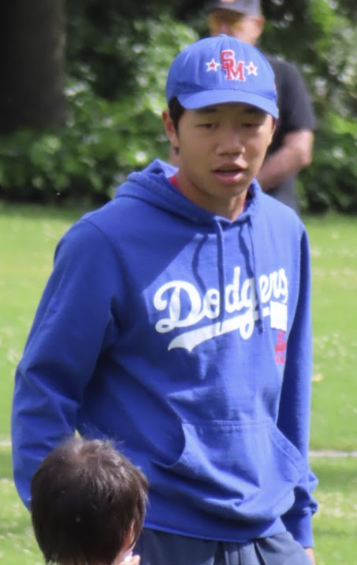

Lead the process
Organize recordings, coach feedback, family communication, reports, and retests. Keep the coaching program and the technical development project connected while making each contribution clear.
MEET THE FOUNDER
Student-athlete. Founder & Head Coach. Hitting Analysis Project Lead.

MARANATHA HIGH SCHOOL · PASADENAWHY I STARTED
Vincent is an infielder and student-athlete at Maranatha High School. During his freshman year, he began helping younger players with hitting and throwing.
He formally established Future Stars Baseball Club in July 2025. As Founder & Head Coach, he has coached more than ten young players in hitting and fielding, organized clinics, and mentored young athletes. He records and reviews hitting videos, recommends drills, and follows up on player progress.
As Project Lead for Future Stars Youth Hitting Analysis, Vincent connects coaching with engineering: a repeatable video-review protocol, a six-category rubric, focused drills, and follow-up recordings. Twelve young players have participated, and seven have documented baseline-to-retest comparisons. He also guides the related software project’s design and testing, with a public Python/MediaPipe 2D prototype and an app v0.3.8 being prepared for limited parent/player testing.
View the Python prototype and development notes ↗
FROM PLAYING TO PROBLEM-SOLVING
Giving a young player a correction is only the first step. The next question is whether the change appears again in a later session. Vincent’s project connects that practical coaching problem with a documented review process: preserve the video, identify a priority, practice it, and return to the evidence.
Organize recordings, coach feedback, family communication, reports, and retests. Keep the coaching program and the technical development project connected while making each contribution clear.
Use six consistent mechanical categories and dated source reports. The exploratory Python prototype uses MediaPipe Pose and OpenCV for 2D measurements, annotated video, and frame-level CSV output.
Check AI-assisted observations against the original footage. Keep retrospective baseline mappings visible, separate contact quality from mechanics, and treat software estimates as a starting point for human review.
BEYOND THE FIELD
Vincent is a student researcher and second-listed co-author on a Mars energy manuscript. He created solar/EDS diagrams and contributed dust-mitigation text. The revised manuscript was resubmitted on October 16, 2026; the publication decision is pending.
At USC Viterbi’s 2026 Discover Engineering program, he collaborated on a balsa-wood bridge challenge exploring load paths, joints, and design trade-offs.
A Maranatha High School infielder and California Select 17U player, Vincent brings his own practice experience to youth coaching. He earned a 2025–26 varsity letter and the 2026 JV Offensive Player of the Year award.
His aim at Future Stars is to make feedback understandable and give each young player a concrete next step.
Vincent’s mentoring also includes peer mathematics tutoring, NHS tutoring, and co-founding an academic tutoring club at Maranatha.
His work in visual art and collaborative mobile-game character design complements his interest in explaining technical ideas clearly. These school and creative activities are separate from the club’s programs.
LEADERSHIP IN ACTION